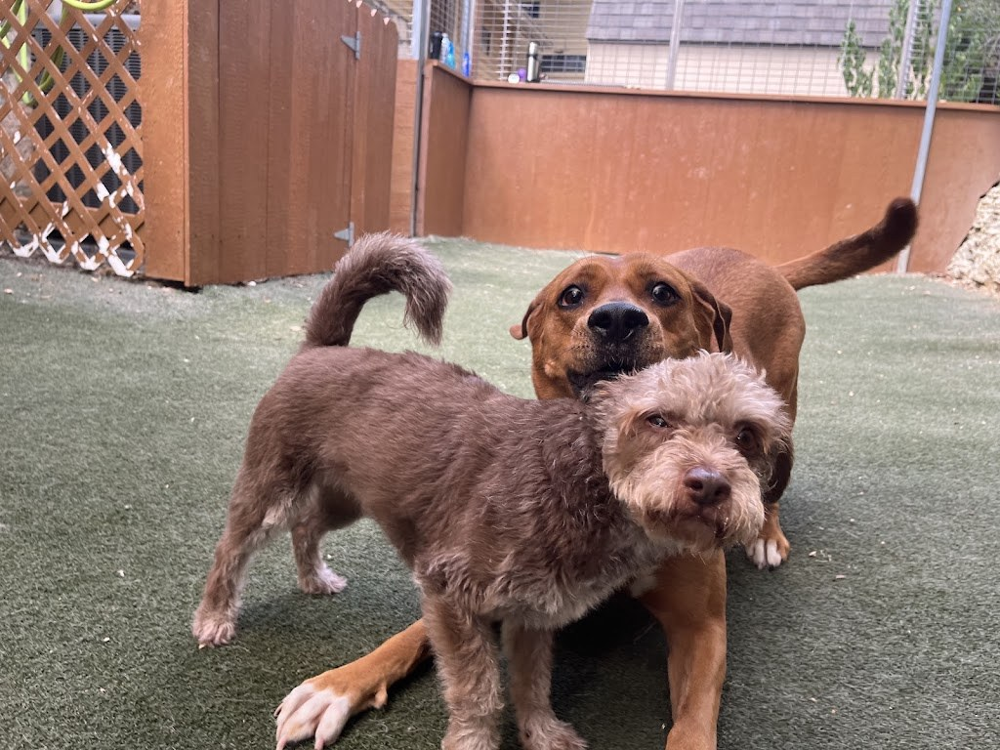
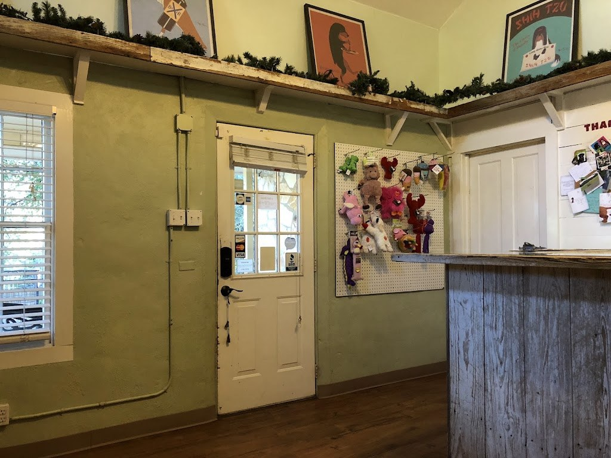

Visit Bed & Biscuit Austin
Dog daycare and overnight boarding on City Park Road, in business since 1994.
Address: 6004 City Park Rd, Austin, TX 78730
Hours: Drop-off and pick-up windows: Mon to Fri 7 to 10:30am and 3 to 7pm, Sat 8 to 10am and 2 to 4pm, Sun 11am to noon and 3 to 7pm
Phone: (512) 343-0723
Email: info@bedandbiscuitaustin.com
Drop-off and pick-up windows
Mon to Fri 7 to 10:30am and 3 to 7pm, Sat 8 to 10am and 2 to 4pm, Sun 11am to noon and 3 to 7pm. Call (512) 343-0723 or email info@bedandbiscuitaustin.com.
Gallery


Photos of Bed & Biscuit Austin: a dog in the yard, two dogs on the turf, and the reception.
Contact
Call (512) 343-0723 Email info@bedandbiscuitaustin.com
Bed & Biscuit Austin serves Austin, TX. Questions? Call (512) 343-0723.